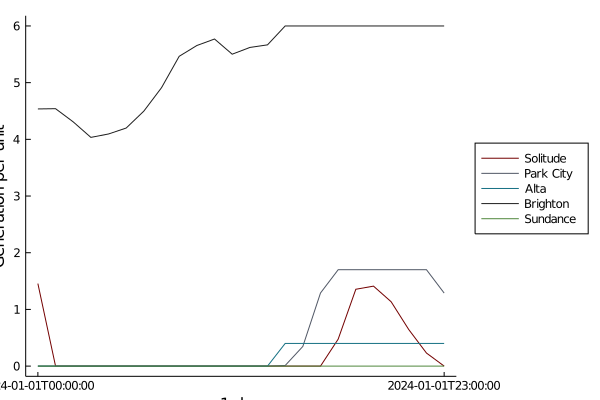
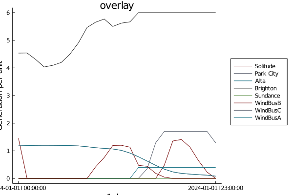
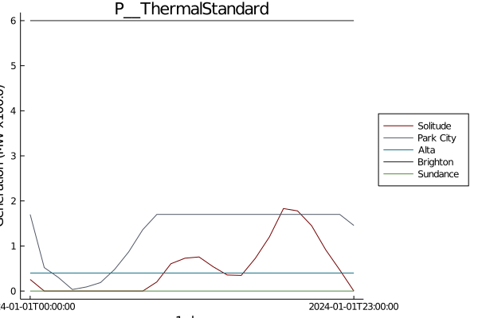
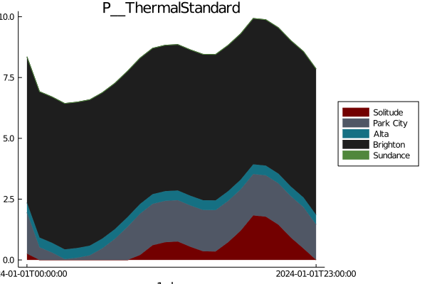
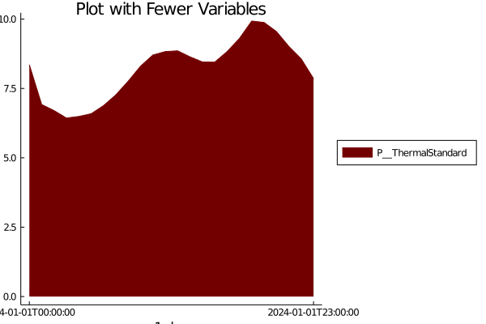
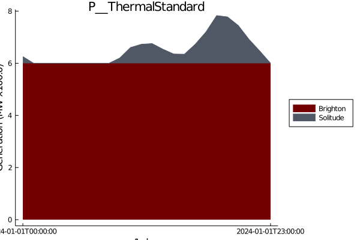
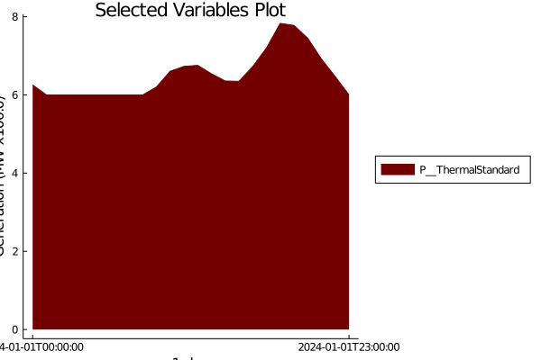

How to plot only specific variables from the results
See How to set up plots to get started
How to plot a single dataframe
plots = plot_dataframe(dataframe, time_range)
How to plot a single dataframe overlayed on an existing plot
plot = plot_variable(dataframe_1, time_range)
plot_2 = plot_variable(plot, dataframe_2, time_range)
How to plot a single variable
plots = plot_variable(results, "P__ThermalStandard")
How to plot a single variable overlayed on an existing plot
plot = plot_variable(results, "P__ThermalStandard")
plot_2 = plot_variable(plot, results, "P__RenewableDispatch")To plot only a couple of variables from the collected results:
Define the variables to be plotted
variables = [Symbol("P__ThermalStandard")]
plots = stack_plot(results, variables)

This will plot all of the generators for the listed variables.
To collect only a subset of variables and generators:
selected_variables = Dict(
Symbol("P__ThermalStandard") => [:Brighton, :Solitude],
)
results_subset = sort_data(results; Variables = selected_variables)
plots = stack_plot(results_subset)

sort_data() creates a new results object only containing the subset of variables and generators listed in the dictionary. If the Variables key word argument is not called, the default for sort_data() is to alphebatize the generators per variable.
This page was generated using Literate.jl.